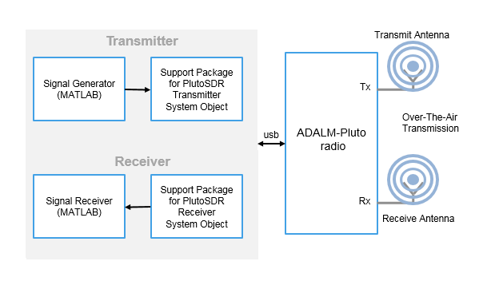

comm.SDRRxPluto
Receive data from Analog Devices ADALM-PLUTO radio
Description
The comm.SDRRxPluto
System object™ is a signal source that receives data from an Analog Devices® ADALM-PLUTO radio. This connection
enables you to simulate and develop various software-defined radio applications.
The following diagram shows the interaction between MATLAB®, the comm.SDRRxPluto
System object, and the radio hardware.

After connecting a PlutoSDR device to a USB port on the host computer, to receive data from the radio hardware:
Create the
comm.SDRRxPlutoobject and set its properties.Call the object as if it were a function.
To learn more about how System objects work, see What Are System Objects?.
Channel Output
The ADALM-PLUTO radio has a single channel for receiving data and sending it to
the comm.SDRRxPluto
System object. The SDR System object outputs a column vector signal of fixed length.
The first call to the comm.SDRRxPluto
System object might contain transient values, which can result in packets containing
undefined data.
Creation
Description
rxPluto = sdrrx('Pluto')
rxPluto = sdrrx('Pluto',Name,Value)Name set to the specified Value. You
can specify additional name-value pair arguments in any order as
(Name1,Value1,...,NameN,ValueN). Unspecified properties
take default values.
Example: rx =
sdrrx('Pluto','CenterFrequency',3.5e9,'BasebandSampleRate',2.0e6);
Properties
Unless otherwise indicated, properties are nontunable, which means you cannot change their
values after calling the object. Objects lock when you call them, and the
release function unlocks them.
If a property is tunable, you can change its value at any time.
For more information on changing property values, see System Design in MATLAB Using System Objects.
Radio identification number, specified as one of the following character vectors:
(recommended) A device-independent index, with the prefix
usb:, such as'usb:0','usb:1','usb:2', …, indicating the first, second, third, ..., attached ADALM-PLUTO radio, respectivelyAn IP address, with the prefix
ip:, such as'ip:192.168.2.1'A serial number, represented by a hexadecimal string with the prefix
sn:, such as'sn:100000235523730700230031090216eaeb'
Note
When working with multiple radios, if devices are inserted or removed, the host computer assignment of USB addresses might change. Any time an SDR device is inserted or removed from a USB port, the host computer polls all USB ports and assigns or reassigns the radio addresses associated with connected devices.

When operating on Windows® keep these considerations in mind.
When running multiple radios on the same host in separate MATLAB sessions, for each MATLAB session the first radio is assigned
usb:0, and the ID number increments by one for subsequent radios.Radios that are being used by one MATLAB are not seen by other MATLAB sessions. Use
findPlutoRadioand check the reported serial number to identify the radios seen in a particular MATLAB session.
To ensure that all assigned radio identities remain static, do not connect or disconnect radios after SDR objects have been created. The best practice is to connect radios and create SDR objects in this order:
Clear all SDR objects.
Connect all radios.
Check to confirm that the connected radios are recognized by running this command:
findPlutoRadio
Create SDR objects.
To interface with the radio hardware, the RadioID property of the
radio object must match the radio ID of the radio hardware. Update the
RadioID property, if necessary.
When running multiple radios on the same host, the host assigns each radio a different
radio ID. When identifying the radio by USB ID, the first radio is assigned
usb:0, and the ID number increments by one for subsequent radios. For
example, to assign IDs to two radios connected on the same host computer, at the MATLAB command prompt, enter:
rx = sdrrx('Pluto','RadioID','usb:0');
tx = sdrtx('Pluto','RadioID','usb:1');
Gain — Radio receiver gain
10 (default) | scalar
Radio receiver gain in dB, specified as a scalar from -4 to 71.
Note
The acceptable minimum and maximum gain setting depends on the center frequency. An incompatible gain and center frequency combination returns an error.
Tunable: Yes
Dependencies
To enable this property, set GainSource to
'Manual'.
Data Types: double
OutputDataType — Output signal data type
'int16' (default) | 'single' | 'double'
Output signal data type, specified as one of the following:
int16— 16-bit signed integersdouble— Double-precision floating pointsingle— Single-precision floating point
EnableBurstMode — Option for burst mode
false (default) | true
Option for burst mode, specified as false or true.
When set to true, this property produces a set of contiguous samples without
overflow. This setting can help simulate models that cannot run in real time. When you enable
burst mode, specify the amount of contiguous data using the property. For more information on
how to use this property, see Burst Mode.
Data Types: logical
NumFramesInBurst — Number of frames in a contiguous burst
1 (default) | strictly positive integer
Number of frames in a contiguous burst, specified as a strictly positive integer.
Dependencies
To enable this property, set EnableBurstMode to
true.
Data Types: double
ShowAdvancedProperties — Option to show advanced properties
false (default) | true
Option to show advanced properties, specified as false or true.
Data Types: logical
UseCustomFilter — Use custom filter
false (default) | true
Use custom filter, specified as one of these values.
false— The filter chain uses the default filter design.true— The filter chain uses a custom filter design. To design a custom filter, call thedesignCustomFilter(Communications Toolbox Support Package for Xilinx Zynq-Based Radio) function.
Note
When applying a custom filter to a comm.SDRRxPluto
System object, the UseCustomFilter property is automatically set to
true. To switch between the default and your custom filter, set
UseCustomFilter property to false or
true, respectively.
For more information, see Baseband Sampling Rate and Filter Chains.
Data Types: logical
EnableQuadratureCorrection — Quadrature correction
true (default) | false
Quadrature correction, specified as true or
false. When this property is true, the
object applies in-phase and quadrature (IQ) imbalance compensation. For more
information, see Quadrature Tracking.
Dependencies
To view this property, set ShowAdvancedProperties to
true.
EnableRFDCCorrection — RF DC correction
true (default) | false
RF direct current (DC) correction, specified as true or
false. When the property is true, the
object applies an RF DC blocking filter. For more information, see DC Offset Tracking.
Dependencies
To view this property, set ShowAdvancedProperties to
true.
EnableBasebandDCCorrection — Baseband DC correction
true (default) | false
Baseband DC correction, specified as true or
false. When the property is true, the
object applies a baseband DC blocking filter. For more information, see DC Offset Tracking.
Dependencies
To view this property, set ShowAdvancedProperties to
true.
FrequencyCorrection — Frequency correction value in ppm
0 (default) | scalar
Frequency correction value in ppm, specified as a scalar from -200 to
200. This property value corrects frequency shifts in data due to
local oscillator frequency offset or clock rate inaccuracy.
Note
When the
FrequencyCorrectionsetting is0, the factory-calibrated setting of the radio will be used.The
FrequencyCorrectionproperty changes the actual radio setting forBasebandSampleRateandCenterFrequency.
Tunable: Yes
Dependencies
To view this property, set ShowAdvancedProperties to
true.
Data Types: double
BISTLoopbackMode — Built-in self-test (BIST) loopback mode
'Disabled' (default) | 'Digital Tx -> Digital Rx' | 'RF Rx -> RF Tx'
Built-in self-test loopback mode, specified as one of these options:
'Disabled'— Disable BIST loopback.'Digital Tx -> Digital Rx'— Enable digital signals to loop back within the AD936x device. The signals bypass the RF stage.'RF Rx -> RF Tx'— Enable incoming receiver RF signals to loop back to the RF transmitter port. The signals bypass the FPGA.
Dependencies
To enable this property, set ShowAdvancedProperties to
true.
Data Types: char | string
BISTToneInject — BIST signal injection mode
'Disabled' (default) | 'Tone Inject Tx' | 'Tone Inject Rx'
BIST signal injection mode, specified as one of these options:
'Disabled'— Disable BIST signal injection.'Tone Inject Tx'— Enable BIST signal injection to transmit path.'Tone Inject Rx'— Enable BIST signal injection to receive path.
When you enable BIST signal
injection, you can set the source of BIST signal
generation with the
BISTSignalGen
property.
Dependencies
To enable this property, set
ShowAdvancedProperties to
true.
Data Types: char | string
BISTSignalGen — Source of BIST signal generation
'PRBS' (default) | 'Tone'
Source of BIST signal generation, specified as one of these options:
'PRBS'— Use the pseudo random binary sequence (PRBS) generator of the board.'Tone'— Use the tone generator of the board. To set the tone frequency and tone level, use theBISTToneFreqandBISTToneLevelproperties, respectively.
Dependencies
To enable this property, set BISTToneInject to 'Tone Inject Tx' or 'Tone Inject Rx'.
Data Types: char | string
BISTToneFreq — BIST tone frequency
'Fs/32' (default) | 'Fs/16' | 'Fs*3/32' | 'Fs/8'
BIST tone frequency, specified as 'Fs/32',
'Fs/16', 'Fs*3/32', or
'Fs/8'.
Dependencies
To enable this property, set BISTSignalGen to 'Tone'.
Data Types: char | string
BISTToneLevel — BIST tone level
'0' (default) | '-6' | '-12' | '-18'
BIST tone level in dB, specified as '0', '-6',
'-12', or '-18' .
Dependencies
To enable this property, set BISTSignalGen to 'Tone'.
Data Types: char | string
Usage
Description
Output Arguments
Object Functions
To use an object function, specify the
System object as the first input argument. For
example, to release system resources of a System object named obj, use
this syntax:
release(obj)
Examples
Version History
Introduced in R2017a